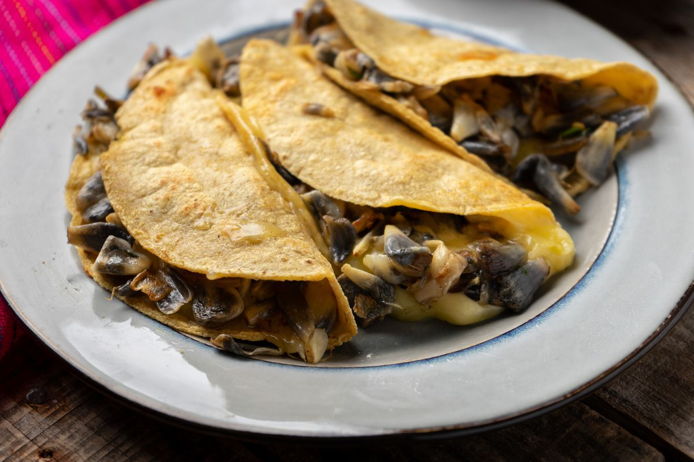

Huitlacoche Quesadilla Recipe
Corn Smut (Huitlacoche) Quesadilla

Corn Smut and Oaxaca Cheese wrapped in a Corn Tortilla
Ingredients
- 2 tablespoons butter
- 1/2 onion chopped
- 1 garlic clove, minced
- 1 jalapeno pepper, seeded and chopped
- 5 fresh epazote leaves
- 1 pound fresh corn smut (or corn truffles)(huitlacoche)
- sea salt to taste
- 10 (6 inch) yellow corn tortillas
- 1 pound Oaxaca cheese, separated into strings
Directions
- Melt butter in a skillet over medium heat; stir in onion, garlic, jalapeño pepper, and epazote and cook until soft, about 5 minutes. Stir corn truffles into onion mixture; cook and stir until truffle liquid has evaporated, about 10 minutes. Season with salt and keep warm.
- Heat a large griddle or skillet over medium heat until hot. Moisten both sides of two tortillas with water and place them, stacked together, onto the hot griddle; cook until bottom tortilla is crisp, about 2 minutes. Flip stacked tortillas and cook other tortilla until crisp, about 2 minutes. Separate two tortillas; place them separately, uncooked side down, onto the hot griddle. Cover crisp side of one tortilla with 1/5 of the Oaxaca cheese; place 1/5 of corn truffle mixture over cheese, then lay crisp side of second tortilla on top to cover truffle mix.
- Cook, turning once, until both tortillas are crisp and cheese is melted, about 3 minutes; repeat with remaining tortillas, cheese, and corn truffle mixture. Cut each quesadilla into four wedges to serve.